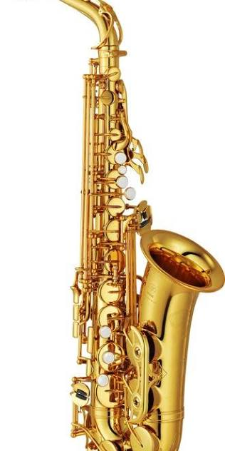

El saxofón es un instrumento musical cónico de la familia de los vientos de madera, inventado por Adolphe Sax en la década de 1840, muy popular en el jazz y la música clásica.
El saxofón fue inventado en 1846 por el fabricante de instrumentos belga Adolphe Sax, de quien proviene su nombre. Sax buscaba crear un instrumento que combinara la potencia de los instrumentos de metal con la agilidad y expresividad de los instrumentos de viento madera. Aunque fue diseñado inicialmente para bandas militares y orquestas, el saxofón alcanzó gran popularidad durante el siglo XX gracias al desarrollo del jazz, convirtiéndose en uno de sus instrumentos más representativos.